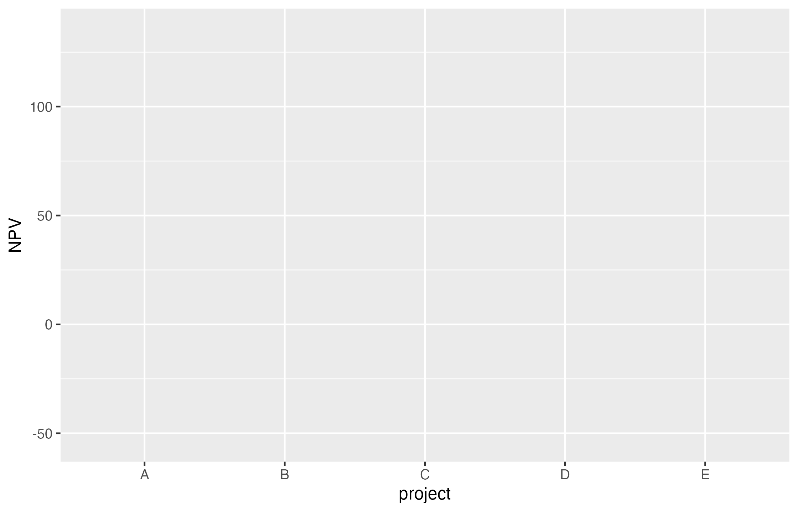
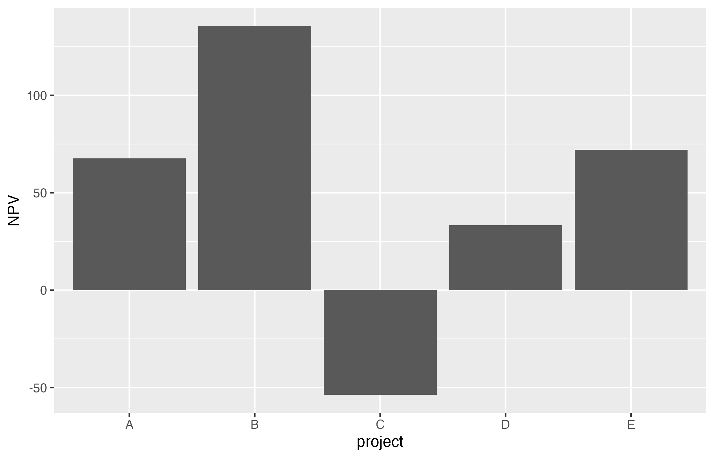
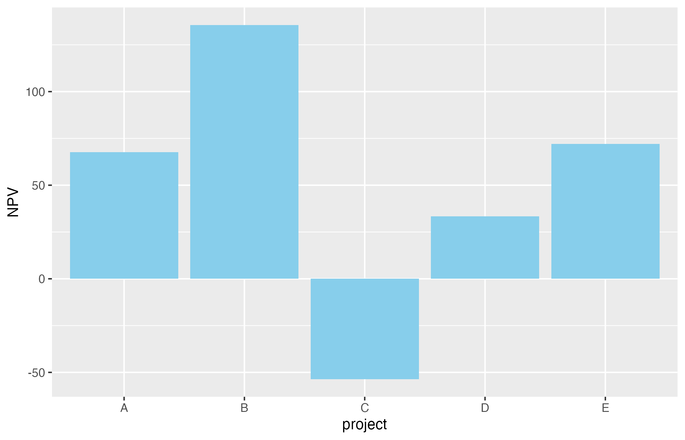
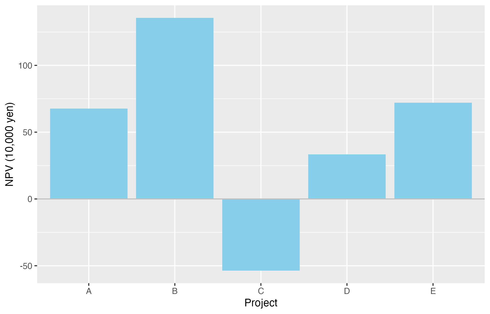
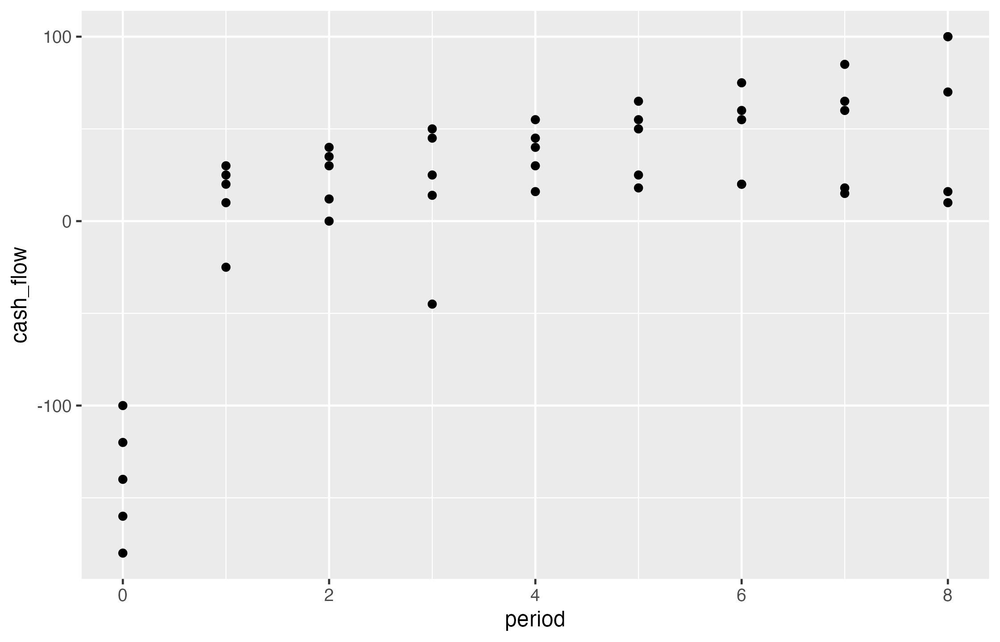
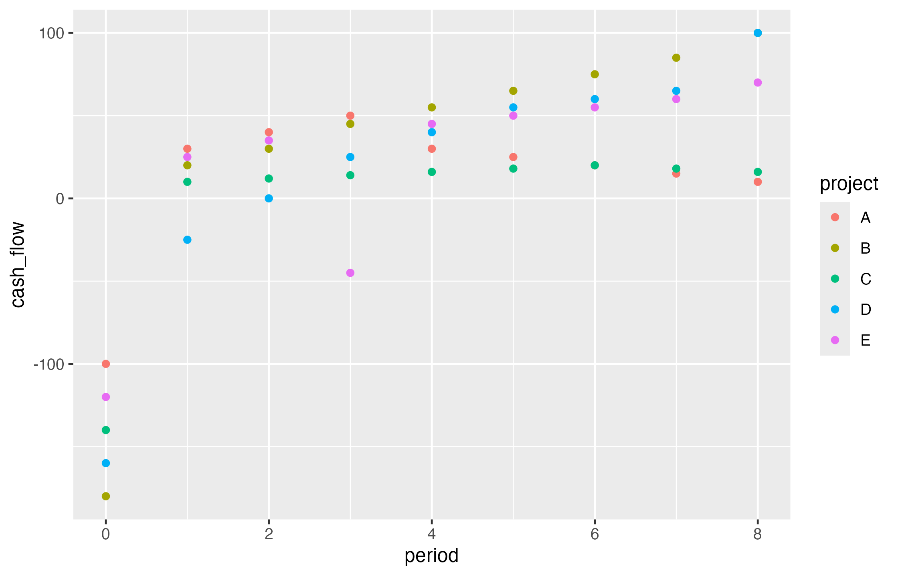
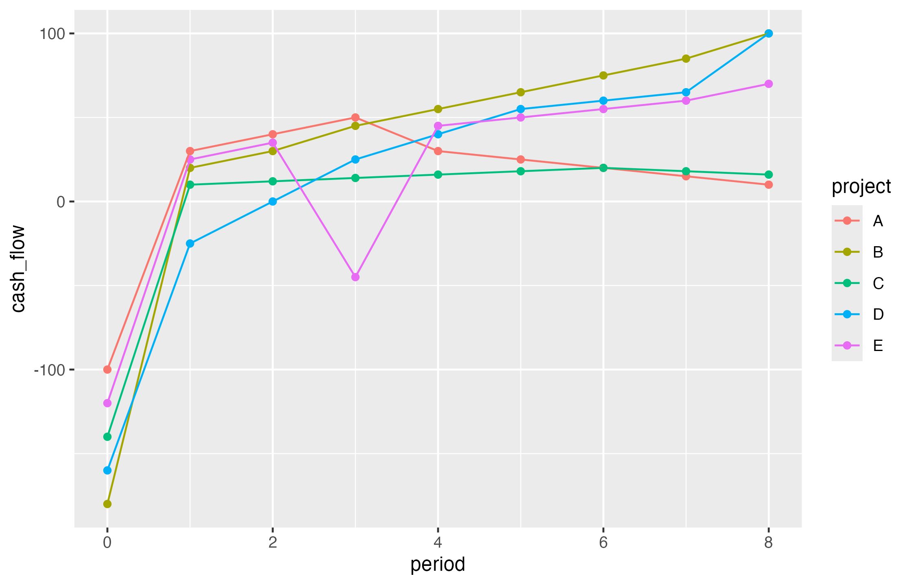
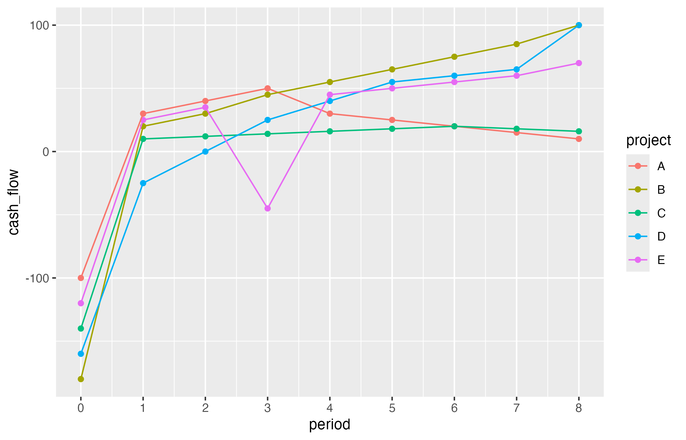
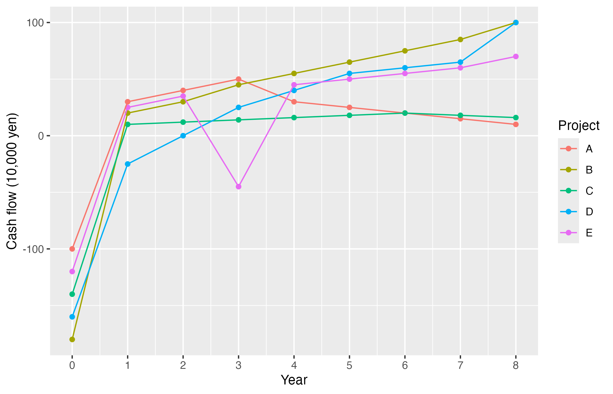

calculate_npv <- function(cash_flows, discount_rate,
periods = seq_along(cash_flows) - 1) {
present_values <- cash_flows / (1 + discount_rate)^periods
sum(present_values)
}
calculate_irr <- function(cash_flows,
periods = seq_along(cash_flows) - 1,
interval = c(-0.99, 1)) {
npv_function <- function(rate) {
calculate_npv(cash_flows, rate, periods)
}
result <- uniroot(
f = npv_function,
interval = interval,
tol = 1e-10
)
result$root
}第6回：tidyverse流による財務・株式データ分析
到達目標
- tidyverseによるデータ分析の基本的な考え方を学ぶ。
- ggplot2によるデータの可視化の方法を学ぶ。
作業の準備
empirical_finance.Rprojを開く。- File → New File → R ScriptからRスクリプトを新規作成し、
script/lesson06.Rとして保存する。すでに作成している場合は、そのファイルを開く。 - cash-flows-lesson06.csvをダウンロードし、Project内の
dataフォルダに保存する。図の保存に使うoutputフォルダも確認し、なければ作成する。
以下のコードは、このRスクリプトに順に記述し、実行して結果を確認する。
計算に使う関数を確認する
本回の分析では、第5回で定義したcalculate_npv()とcalculate_irr()を使う。前回の作業領域が保存されていれば、同じProjectを開くと関数も自動復元されるため、再定義する必要はない。Environmentに二つの関数があることを確認する。
関数を保存しておらず、復元されていない場合は、以下の定義をscript/lesson06.Rに記述して実行する。
関数が復元されていない場合の定義
Chapter 1｜tidyverseによるデータ分析
第5回では、一つの投資案についてNPVとIRRを計算した。財務・株式データの分析では、多くの企業、投資案、時点を対象に、データの読み込みから計算、比較までを繰り返すことになる。そこで本回では、複数の投資案のキャッシュフローを一つの表にまとめ、tidyverseを使って一連の分析を行う。
1. tidyverseとは
tidyverseは、データ分析のために作られたRのパッケージ群である。各パッケージが共通の設計思想やデータ構造を持ち、読み込み、整理、集計、作図を組み合わせて使える。第4回で使ったreadrもその一つである。tidyverse公式サイト

| パッケージ | 主な役割 |
|---|---|
readr |
データの読み込み |
tibble |
表形式のデータの扱い |
tidyr |
データの整形 |
dplyr |
データの加工・集計 |
ggplot2 |
データの可視化 |
これらは主なパッケージの一部である。本回では、すでに分析しやすい形に整理したCSVを用意し、主にreadr、dplyr、ggplot2を使う。tidyverseのパッケージ一覧
tidyverse流とは、tidyverseのパッケージを使ってデータ分析を行う流派（スタイル）である。Rの標準的な関数や基本構文を中心に使う分析方法と対比した呼び方である。
読み込み・整理・集計・作図を組み合わせて進められ、複数の投資案に同じ処理を適用しやすい。また、処理を順に記述することで、分析手順の確認や再実行もしやすくなる。
本講義では、以降、主にtidyverseのパッケージを使って、財務データと株式データの処理・分析を行う。
2. tidyverseを読み込む
tidyverseパッケージを導入すると、分析に使う中心的なパッケージをまとめてインストールできる。
未導入の場合は、Consoleで次のコードを実行する。
install.packages("tidyverse")続いて、Rスクリプトに次の行を記述する。Projectのオブジェクトが復元されても、使用するパッケージはlibrary()で読み込む。
library(tidyverse)3. パイプ演算子
パイプ演算子で複数の処理をつなぐ書き方は、tidyverseを代表する特徴の一つである。tidyverseでは、もともと%>%というパイプ演算子が使われてきた。
パイプ演算子%>%を使うと、左側の結果を右側の関数の第1引数へ渡し、処理を実行する順に記述できる。本回で使う投資案Aについて、各キャッシュフローの現在価値を合計し、小数第2位まで表示する。
cash_flows <- c(-100, 30, 40, 50, 30, 25, 20, 15, 10)
present_values <- cash_flows / (1 + 0.08)^(0:8)
round(sum(present_values), digits = 2)[1] 67.59present_values %>%
sum() %>%
round(digits = 2)[1] 67.59どちらも結果は67.59となる。パイプを使ったコードは、「現在価値を合計し、その結果を小数第2位まで丸める」と上から読める。

2021年に公開されたR 4.1.0からは、R標準のパイプ演算子|>も使えるようになった。上の処理は、|>を使って次のように書ける。
present_values |>
sum() |>
round(digits = 2)[1] 67.59この例では、%>%と同じ結果が得られる。以下では、パイプ演算子をR標準の|>で統一する。パイプの後で改行すると、各処理を確認しやすい。
Chapter 2｜投資案ごとにNPVとIRRを求める
1. CSVを読み込む
五つの投資案のキャッシュフローをCSVから読み込み、データの内容と構造を確認する。
五つの投資案A・B・C・D・Eのキャッシュフローを使う。各投資案について、時点0の初期投資から8年後までの金額を記録している。金額の単位は万円とする。
cash_flow_data <- read_csv(
"data/cash-flows-lesson06.csv",
na = c("", "NA"),
show_col_types = FALSE
)
head(cash_flow_data)# A tibble: 6 × 3
project period cash_flow
<chr> <dbl> <dbl>
1 A 0 -100
2 A 1 30
3 A 2 40
4 A 3 50
5 A 4 30
6 A 5 25read_csv()が返す表は、データフレームを拡張したtibbleである。
| 列名 | 内容 |
|---|---|
project |
投資案の名前 |
period |
キャッシュフローが発生する時点（年） |
cash_flow |
キャッシュフロー（万円、支払いは負） |
dim(cash_flow_data)[1] 45 3colSums(is.na(cash_flow_data)) project period cash_flow
0 0 0 各投資案に時点0～8の9行があり、データは合計45行・3列で、欠損値はない。
2. データの抽出
tidyverse流では、filter()とselect()を使ってデータを抽出する。filter()は条件を満たす行を、select()は指定した列を取り出す。
ここでは、投資案Aのデータを抽出し、時点とキャッシュフローの列だけを取り出す。
project_a <- cash_flow_data |>
filter(project == "A") |>
select(period, cash_flow)
project_a# A tibble: 9 × 2
period cash_flow
<dbl> <dbl>
1 0 -100
2 1 30
3 2 40
4 3 50
5 4 30
6 5 25
7 6 20
8 7 15
9 8 10これらの関数では、表を第1引数として渡しているため、cash_flow_data$projectではなくprojectのように列名だけを記述できる。
filter()には、複数の条件を指定できる。条件をカンマで区切ると、すべての条件を満たす行が抽出される。例えば、投資案Bのうち、時点1以降の行だけを取り出すには、次のように二つの条件を指定する。
cash_flow_data |>
filter(project == "B", period >= 1) |>
select(period, cash_flow)# A tibble: 8 × 2
period cash_flow
<dbl> <dbl>
1 1 20
2 2 30
3 3 45
4 4 55
5 5 65
6 6 75
7 7 85
8 8 100project == "B"とperiod >= 1の両方を満たす行が残り、その中から時点とキャッシュフローの列を表示する。
一方、いずれかの条件を満たす行を抽出するには、条件を|（または）でつなぐ。例えば、投資案BまたはCのデータを取り出すには、次のように書く。
cash_flow_data |>
filter(project == "B" | project == "C")# A tibble: 18 × 3
project period cash_flow
<chr> <dbl> <dbl>
1 B 0 -180
2 B 1 20
3 B 2 30
4 B 3 45
5 B 4 55
6 B 5 65
7 B 6 75
8 B 7 85
9 B 8 100
10 C 0 -140
11 C 1 10
12 C 2 12
13 C 3 14
14 C 4 16
15 C 5 18
16 C 6 20
17 C 7 18
18 C 8 16さらに、「投資案BまたはCで、時点1以降」という条件を指定することもできる。
cash_flow_data |>
filter(
(project == "B" | project == "C"),
period >= 1
)# A tibble: 16 × 3
project period cash_flow
<chr> <dbl> <dbl>
1 B 1 20
2 B 2 30
3 B 3 45
4 B 4 55
5 B 5 65
6 B 6 75
7 B 7 85
8 B 8 100
9 C 1 10
10 C 2 12
11 C 3 14
12 C 4 16
13 C 5 18
14 C 6 20
15 C 7 18
16 C 8 163. 新しい列の追加
tidyverse流では、mutate()を使って新しい列を追加する。
ここでは、各キャッシュフローを年8%で割り引き、現在価値の列present_valueを加える。
discount_rate <- 0.08
pv_data <- cash_flow_data |>
mutate(
present_value = cash_flow / (1 + discount_rate)^period
)
head(pv_data)# A tibble: 6 × 4
project period cash_flow present_value
<chr> <dbl> <dbl> <dbl>
1 A 0 -100 -100
2 A 1 30 27.8
3 A 2 40 34.3
4 A 3 50 39.7
5 A 4 30 22.1
6 A 5 25 17.0各行のcash_flowとperiodを使って計算する。元の表はcash_flow_dataに残し、現在価値を加えた表をpv_dataに保存している。
4. 投資案ごとに集計する
tidyverse流では、group_by()でグループを指定し、summarise()でグループごとの集計を行う。ここでは、投資案ごとにNPVとIRRを計算し、結果を一つの表にまとめる。
(1) group_by()でグループを指定する
group_by()は、指定した列の値が同じ行を、同じグループとして扱うための関数である。group_by(project)とすると、投資案Aの行、Bの行というように、投資案ごとにグループが指定される。dplyr：group_by()
pv_grouped <- pv_data |>
group_by(project)
pv_grouped# A tibble: 45 × 4
# Groups: project [5]
project period cash_flow present_value
<chr> <dbl> <dbl> <dbl>
1 A 0 -100 -100
2 A 1 30 27.8
3 A 2 40 34.3
4 A 3 50 39.7
5 A 4 30 22.1
6 A 5 25 17.0
7 A 6 20 12.6
8 A 7 15 8.75
9 A 8 10 5.40
10 B 0 -180 -180
# ℹ 35 more rows出力のGroups: project [5]は、projectによって五つのグループが指定されていることを表す。グループを指定しただけでは、まだ集計は行われない。表は45行のままで、各行の金額も変わらない。
(2) summarise()でグループごとに集計する
summarise()は、合計や平均などを計算し、各グループの結果を一行にまとめる関数である。新しい列名 = 集計の計算式という形で、結果の列名と計算内容を指定する。summarize()と書いても同じ関数である。dplyr：summarise()
| 集計に使う関数 | 内容 |
|---|---|
sum(x) |
合計 |
mean(x) |
平均 |
n() |
グループ内の行数 |
まず、投資案ごとに現在価値を合計してみよう。
pv_grouped |>
summarise(
NPV = sum(present_value),
.groups = "drop"
)# A tibble: 5 × 2
project NPV
<chr> <dbl>
1 A 67.6
2 B 136.
3 C -53.6
4 D 33.3
5 E 72.0sum(present_value)は、各投資案に属する9行の現在価値を合計する。結果は、A～Eの各投資案につき一行、合計5行になる。グループを指定せずにsummarise(NPV = sum(present_value))を実行すると、表全体の合計が一行で返される。
.groups = "drop"は、集計結果のグループ化を解除する指定である。
(3) NPVとIRRをまとめて計算する
group_by()とsummarise()をパイプでつなぎ、NPVとIRRを同時に計算する。NPVは現在価値の合計、IRRは同じグループのキャッシュフローと時点をcalculate_irr()へ渡して求める。
project_results <- pv_data |>
group_by(project) |>
summarise(
NPV = sum(present_value),
IRR = calculate_irr(cash_flow, periods = period),
.groups = "drop"
) |>
mutate(IRR_percent = IRR * 100)
project_results# A tibble: 5 × 4
project NPV IRR IRR_percent
<chr> <dbl> <dbl> <dbl>
1 A 67.6 0.274 27.4
2 B 136. 0.212 21.2
3 C -53.6 -0.0243 -2.43
4 D 33.3 0.112 11.2
5 E 72.0 0.184 18.4 summarise()の後にmutate()で百分率の列を追加している。IRRは小数、IRR_percentは百分率で表した値となる。
AのNPVは約67.59万円、IRRは約27.44%となる。summarise()にはsum()やmean()だけでなく、第5回で定義した自作関数も使える。
5. 結果を並べ替える
五つの投資案をNPVの大きい順に並べ、計算結果を比較する。
arrange()は行を並べ替える。既定では昇順、desc()を付けると降順になる。
project_results |>
arrange(desc(NPV)) |>
select(project, NPV, IRR_percent)# A tibble: 5 × 3
project NPV IRR_percent
<chr> <dbl> <dbl>
1 B 136. 21.2
2 E 72.0 18.4
3 A 67.6 27.4
4 D 33.3 11.2
5 C -53.6 -2.43NPVが大きい順にB、E、A、D、Cとなる。BのNPVは約135.51万円で最も大きく、Cは約−53.58万円となる。このコードは結果を表示するだけであり、project_results自体の並び順は変わらない。
練習：discount_rateを12%に変更し、pv_dataの作成から集計までを再実行しなさい。NPVとIRRのうち、どちらが変化するか確認する。確認後は8%に戻して同じ処理を再実行し、次の作図へ進む。
Chapter 3｜ggplot2で結果を可視化する
1. ggplot2の作図の考え方
データ、変数と軸の対応、図形を順に指定し、図を組み立てる考え方を学ぶ。
ggplot2は、図を作るためのパッケージであり、tidyverseに含まれている。Chapter 1でlibrary(tidyverse)を実行していれば、そのまま使える。ggplot2の名前にあるggは、Grammar of Graphics（グラフィックスの文法）を表す。データと図の要素を組み合わせる共通の書き方で、さまざまなグラフを作成できる。
第5回ではplot()で作図した。ここでは、次の要素を一つずつ指定し、その都度、表示された図を確認する。
| 指定する内容 | 主に使う関数 |
|---|---|
| 作図するデータ | ggplot() |
| 変数と軸・色などの対応 | aes() |
| 棒、点、線などの図形 | geom_col()、geom_point()、geom_line() |
| 軸や凡例の名前 | labs() |
| 背景や軸線などの見た目 | theme_classic()など |
| 作成した図の表示 | print() |
図の要素は+で追加する。Chapter 1のパイプ演算子|>が処理結果を次の関数へ渡すのに対し、ggplot2の+は図に層や設定を加える記号である。+の後で改行し、一行ずつ要素を書き足していこう。ggplot2：ggplot()
2. NPVの棒グラフ
投資案ごとのNPVを棒の高さで表し、五つの投資案の大小と正負を比較する。
(1) 作図するデータを確認する
使うのは、Chapter 2で作成したproject_resultsである。まず、作図に使う投資案とNPVの列を確認する。
project_results |>
select(project, NPV)# A tibble: 5 × 2
project NPV
<chr> <dbl>
1 A 67.6
2 B 136.
3 C -53.6
4 D 33.3
5 E 72.0一行が一つの投資案の結果を表している。ここでは、横軸にproject、縦軸にNPVを対応させる。
(2) データと軸を指定する
ggplot()にデータと変数の対応を渡し、図の土台を作る。
npv_base <- ggplot(
data = project_results,
mapping = aes(x = project, y = NPV)
)
print(npv_base)
| コードの部分 | この例での意味 |
|---|---|
data = project_results |
作図に使う表を指定する |
mapping = aes(...) |
表の変数を図のどこに対応させるか指定する |
x = project |
投資案を横軸に対応させる |
y = NPV |
NPVを縦軸に対応させる |
aes()では、指定した表にある列名をそのまま使える。project_results$NPVのように表の名前を繰り返す必要はない。ggplot2：aes()
図を表示すると、軸の名前は現れるが、まだ棒は描かれていない。ggplot()とaes()は、データと図の対応を指定する段階であり、実際の図形は次に加える。
なお、引数の順序を守れば、ggplot(project_results, aes(x = project, y = NPV))と引数名を省略しても同じ指定になる。ここでは、各引数の役割が分かるように名前を付けて書いている。
(3) 棒の層を加える
geom_col()を加え、NPVを棒の高さで表す。
npv_bars <- npv_base +
geom_col()
print(npv_bars)
層（layer）とは、図に重ねる棒、点、線などの要素である。geom_から始まる関数は、どの図形でデータを表すかを指定する。
| 関数 | 図形と用途 |
|---|---|
geom_col() |
計算済みの数値を棒の高さで表す |
geom_point() |
各観測を点で表す |
geom_line() |
観測を横軸の順に線で結ぶ |
今回はNPVがすでに計算されているため、geom_col()を使う。geom_bar()は、既定では各カテゴリの件数を数えて棒の高さにする関数であり、今回の目的にはgeom_col()が合っている。ggplot2：棒グラフ
図では、NPVが正の投資案の棒は0から上に伸び、負のCの棒は0から下に伸びる。
(4) 棒の色を指定する
棒を塗りつぶす色は、geom_col()のfillで指定する。
npv_coloured <- npv_base +
geom_col(fill = "skyblue")
print(npv_coloured)
fill = "skyblue"は、すべての棒を同じ水色にする指定である。棒の高さは変わらず、色だけが変わる。
(5) 軸のラベルを付ける
labs()を加え、軸に表示する名前と単位を設定する。
npv_labelled <- npv_coloured +
labs(x = "Project", y = "NPV (10,000 yen)")
print(npv_labelled)xは横軸の名前、yは縦軸の名前である。金額の単位は万円なので、縦軸に10,000 yenと記載している。labs()は表示名を変えるだけであり、表の列名や値は変えない。
(6) NPVが0となる基準線を加える
geom_hline()を加え、NPVの正負を見比べるための水平線を引く。
npv_reference <- npv_labelled +
geom_hline(yintercept = 0, colour = "gray")
print(npv_reference)
yintercept = 0は、縦軸の値が0となる位置に線を引く指定である。colour = "gray"は、その線の色を灰色に固定する。
(7) テーマを指定する
theme_classic()を加え、背景と軸線などの見た目を整える。
npv_plot <- npv_reference +
theme_classic()
print(npv_plot)
背景が白くなり、グリッド線がなくなる。テーマを変えても、NPVの値や棒の高さは変わらない。主なテーマには、次のようなものがある。ggplot2：テーマ
| テーマ | 主な見た目 |
|---|---|
theme_gray() |
既定の灰色の背景とグリッド線 |
theme_bw() |
白い背景、枠線、グリッド線 |
theme_classic() |
白い背景と軸線、グリッド線なし |
theme_minimal() |
背景や枠の装飾を抑えた見た目 |
これでNPVの棒グラフが完成した。BのNPVが最も大きく、Cだけが負となっていることを確認する。完成した図はnpv_plotに保存されており、後で画像ファイルとして出力できる。
作図コードをまとめて書く
一つずつ確認した要素は、次のようにまとめて書くこともできる。上の段階的な作図と同じ図になる。
npv_plot <- ggplot(
data = project_results,
mapping = aes(x = project, y = NPV)
) +
geom_col(fill = "skyblue") +
labs(x = "Project", y = "NPV (10,000 yen)") +
geom_hline(yintercept = 0, colour = "gray") +
theme_classic()
print(npv_plot)練習：縦軸をIRR_percentに変更し、IRRを比較する棒グラフを作りなさい。縦軸名は"IRR (%)"とする。
3. キャッシュフローの折れ線グラフ
時点ごとのキャッシュフローを点と線で表し、投資案ごとの支払いや受取りの違いを比較する。
使うのは、Chapter 2で読み込んだcash_flow_dataである。横軸をperiod、縦軸をcash_flowとする。先ほどの棒グラフと同様に、データと変数の対応を指定してから、図の要素を加えていこう。
(1) 時点と金額を点で表す
まず、横軸と縦軸を指定し、geom_point()で各観測を点として描く。
cash_flow_base <- ggplot(
data = cash_flow_data,
mapping = aes(x = period, y = cash_flow)
)
cash_flow_points <- cash_flow_base +
geom_point()
print(cash_flow_points)
一つの点が、一つの投資案の一つの時点の金額を表す。この段階ではすべての点が同じ色なので、どの投資案の点なのかは区別できない。同じ時点・金額の観測があれば、点は重なって表示される。
(2) 投資案ごとに色を分ける
aes()にcolour = projectを加え、投資案を色に対応させる。
cash_flow_colour_base <- ggplot(
data = cash_flow_data,
mapping = aes(x = period, y = cash_flow, colour = project)
)
cash_flow_coloured <- cash_flow_colour_base +
geom_point()
print(cash_flow_coloured)
A～Eに異なる色が割り当てられ、色と投資案の対応を示す凡例（legend）も表示される。colour = projectは色名を指定する命令ではなく、projectの値に応じて色を分ける指定である。
(3) 同じ投資案の点を線で結ぶ
geom_line()を加え、各投資案のキャッシュフローを時点順に結ぶ。
cash_flow_lines <- cash_flow_coloured +
geom_line()
print(cash_flow_lines)
geom_line()は横軸の値の順に点を結ぶ。この例では、projectを色に対応させているため、投資案ごとに別の線が描かれる。データとaes()の指定は、ggplot()で作った土台から点と線の層へ引き継がれる。ggplot2：折れ線グラフ
線は各時点の金額の変化を見比べるためのものであり、時点の間にもキャッシュフローが発生するという意味ではない。
(4) 横軸の目盛りを各年に付ける
scale_x_continuous()を加え、時点0～8をすべて横軸の目盛りに表示する。
cash_flow_years <- cash_flow_lines +
scale_x_continuous(breaks = 0:8)
print(cash_flow_years)
breaksは、目盛りを置く位置の指定である。0:8は0から8までの整数を表すため、一年ごとの時点を確認しやすくなる。これは目盛りの表示を変える設定であり、データの時点や金額は変えない。
(5) 軸と凡例の名前を付ける
labs()を加え、横軸、縦軸、色の凡例に表示する名前を設定する。
cash_flow_labelled <- cash_flow_years +
labs(
x = "Year",
y = "Cash flow (10,000 yen)",
colour = "Project"
)
print(cash_flow_labelled)
labs()のcolourは、色の凡例の見出しを設定する引数である。aes(colour = project)が色分けに使う変数を指定するのに対し、labs(colour = "Project")は凡例に表示する名前を指定している。
(6) 基準線とテーマを加えて仕上げる
先ほど学んだ基準線とテーマを加え、金額の正負を見比べやすくする。
cash_flow_plot <- cash_flow_labelled +
geom_hline(yintercept = 0, colour = "gray") +
theme_classic()
print(cash_flow_plot)
完成した図では、Eの時点3に追加の支払いがあることや、Dでは受取りが時点3から始まることを確認できる。NPVだけでは見えない、資金の動きも比較できる。
作図コードをまとめて書く
折れ線グラフも、各要素をまとめて書けば、次のようになる。
cash_flow_plot <- ggplot(
data = cash_flow_data,
mapping = aes(x = period, y = cash_flow, colour = project)
) +
geom_point() +
geom_line() +
scale_x_continuous(breaks = 0:8) +
labs(x = "Year", y = "Cash flow (10,000 yen)", colour = "Project") +
geom_hline(yintercept = 0, colour = "gray") +
theme_classic()
print(cash_flow_plot)4. 図を保存する
完成したNPVの棒グラフを、Project内のoutputフォルダに画像ファイルとして保存する。
図を画面に表示するだけでは、画像ファイルは保存されない。ggsave()に保存先と図のオブジェクトを渡す。
ggsave(
filename = "output/npv-comparison.png",
plot = npv_plot,
width = 7,
height = 4.5,
units = "in",
dpi = 160
)| 引数 | この例での指定 |
|---|---|
filename |
保存先とファイル名。.pngでPNG画像を指定する |
plot |
保存する図のオブジェクト。ここでは完成したnpv_plot |
width、height |
画像の幅と高さ |
units |
幅と高さの単位。"in"はインチ |
dpi |
一インチ当たりの画素数。ここでは160を指定する |
plot = npv_plotと明示することで、途中で表示した図ではなく、完成したNPVの棒グラフを保存できる。ggplot2：ggsave()
同名のファイルは上書きされる。保存後はFilesペインでoutput/npv-comparison.pngを開き、図が保存されていることを確認する。ggsave()が画像の出力を行うため、dev.off()は不要である。
作業を終えるときは、script/lesson06.Rを保存する。